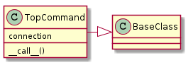
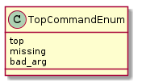
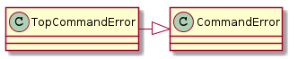
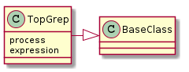
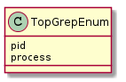
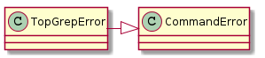

This is a substitute for the ps command in the cases where it is not available. The device for which it is intially being built is an iPad.
The top command on the iPad does not behave exactly like the GNU top and so anyone using this must make sure that:
The syntax for getting a single (non-interactive) output (the flag below is an ‘l’ as in ‘larry’):
top -l 1The top command outputs all the processes (the top on ubuntu will only output what fits on the screen)
The top command does not need the
TERMvariable set when run via non-interactive sshThe first two columns of output are PID and COMMAND
TopCommand |
|
TopCommandEnum |



Example Use:
connection = SSHConnection(hostname='elin', username='allion')
top = TopCommand(connection)
for line in top():
print line
TopGrep |
|
TopGrepError |



Example Use:
connection = SSHConnection(hostname='elin', username='allion')
grep = TopGrep(connection, 'iperf')
for pid in grep():
print pid
TestTopGrep.test_constructor |
|
TestTopGrep.test_call |
|
TestTopGrep.test_expression |
|
TestTopGrep.test_unmatched |
|
TestTopGrep.test_call_parameter |
|
TestTopGrep.test_cpu_field |
TestTop.test_constructor |
|
TestTop.test_wrong_command |
|
TestTop.test_bad_argument |
|
TestTop.test_standard_error |
1152 sshd 0.0% 0:00.16 1 18+ 0 0 0 1500K+ 268M+ 1151 launchprox 0.0% 0:00.01 1 18+ 0 0 0 408K+ 266M+
952 geod 0.0% 0:00.08 2 30+ 0 0 0 1456K+ 295M+ 812 SCHelper 0.0% 0:26.09 4 34+ 0 0 0 952K+ 277M+ 748 iperf 0.0% 0:00.47 1 9+ 0 0 0 228K+ 267M+ 493 mediaremot 0.0% 0:04.89 3 47+ 0 0 0 1636K+ 278M+ 492 MobileTime 0.0% 0:01.60 11 93+ 0 0 0 21M+ 347M+ 489 AppStore 0.0% 0:03.40 14 156+ 0 0 0 28M+ 441M+ 275 coresymbol 0.0% 0:00.02 2 21+ 0 0 0 660K+ 277M+ 227 Preference 0.0% 0:33.08 4 111+ 0 0 0 11M+ 317M+ 184 filecoordi 0.0% 0:00.02 2 27+ 0 0 0 1080K+ 277M+ 177 accountsd 0.0% 0:00.11 2 36+ 0 0 0 1716K+ 276M+ 176 MobileMail 0.0% 0:13.02 6 125+ 0 0 0 7312K+ 315M+ 174 tccd 0.0% 0:00.18 2 27+ 0 0 0 976K+ 277M+ 172 assetsd 0.0% 0:05.93 3 47+ 0 0 0 3996K+ 298M+ 167 xpcd 0.0% 0:00.03 3 27+ 0 0 0 788K+ 277M+
99 lsd 0.0% 0:06.18 2 31+ 0 0 0 1964K+ 295M+ 97 distnoted 0.0% 0:00.08 2 34+ 0 0 0 1108K+ 295M+ 87 apsd 0.0% 0:23.01 5 115+ 0 0 0 2548K+ 296M+ 85 CommCenter 0.0% 0:06.91 5 108+ 0 0 0 2800K+ 280M+ 84 itunesstor 0.0% 1:32.98 5 107+ 0 0 0 7204K+ 301M+ 83 aggregated 0.0% 0:01.34 2 36+ 0 0 0 624K+ 277M+ 82 BlueTool 0.0% 0:00.06 2 25+ 0 0 0 900K+ 278M+ 81 networkd_p 0.0% 0:00.03 2 26+ 0 0 0 656K+ 277M+ 80 networkd 0.0% 0:01.95 2 61+ 0 0 0 1328K+ 277M+ 79 SpringBoar 0.0% 7:10.45 12 293+ 0 0 0 25M+ 360M+ 71 notifyd 0.0% 0:19.31 4 62+ 0 0 0 848K+ 278M+ 70 BTServer 0.0% 0:38.28 6 73+ 0 0 0 2868K+ 282M+ 65 kbd 0.0% 0:00.48 2 37+ 0 0 0 3272K+ 296M+ 61 backboardd 0.0% 2:07:12 12 577+ 0 0 0 9884K+ 406M+ 59 configd 0.0% 1:04.35 9 249+ 0 0 0 2924K+ 280M+ 58 AppleIDAut 0.0% 0:00.04 3 30+ 0 0 0 1048K+ 277M+ 56 fairplayd. 0.0% 0:06.59 2 32+ 0 0 0 3400K+ 285M+ 55 fseventsd 0.0% 0:03.50 18 67+ 0 0 0 1308K+ 284M+ 53 iaptranspo 0.0% 0:35.67 2 65+ 0 0 0 1464K+ 295M+ 52 imagent 0.0% 0:06.29 3 73+ 0 0 0 2192K+ 277M+ 50 locationd 0.0% 2:10.00 9 155+ 0 0 0 5260K+ 286M+ 48 mDNSRespon 0.0% 0:11.59 4 55+ 0 0 0 1948K+ 277M+ 46 mediaserve 0.0% 0:12.60 15 224+ 0 0 0 5472K+ 307M+ 42 deleted 0.0% 0:00.03 2 28+ 0 0 0 1276K+ 278M+ 41 backboardd 0.0% 2:07:12 12 577+ 0 0 0 9884K+ 406M+ 40 installd 0.0% 0:00.44 2 31+ 0 0 0 1408K+ 277M+ 38 lockdownd 0.0% 0:05.85 2 46+ 0 0 0 1904K+ 295M+ 31 powerd 0.0% 0:42.65 2 59+ 0 0 0 1272K+ 295M+ 29 timed 0.0% 0:05.93 3 49+ 0 0 0 1908K+ 295M+ 26 wifid 0.0% 7:10.17 4 106+ 0 0 0 2484K+ 296M+ 24 syslogd 0.0% 0:05.70 6 56+ 0 0 0 852K+ 279M+ 23 UserEventA 0.0% 23:15.66 9 214+ 0 0 0 3468K+ 300M+
1 launchd 0.0% 1:10.80 3 330+ 0 0 0 1140K+ 277M+